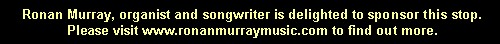

|
Tubasson French |  |
A 16' pedal reed stop, similar to the Trombone but, according to Audsley, softer. Wedgwood report that it has closed shallots. Used by French and Belgian builders, including Anneessens.
We know of only two examples:
Tubasson 16', Pedal; Bridlington Priory, Yorkshire, England; Anneessens 1889.
Tubasson 8', Pédale; St. Josefkerk, Aalst, Belgium; Vereecken 1900.
|
Original website compiled by Edward L. Stauff. For educational use only. Tubasson.html - Last updated 27 November 2000. |
Home Full Index |